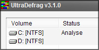

ULTRA DEFRAG
- OVERVIEW
- SCREENSHOTS
- DOWNLOAD
- FORUM
- DISCLAIMER
- CREDITS AND LICENCE
- REPORT BUGS
- UD SOURCEFORGE
- VERSION HISTORY
DOCUMENTATION
- HANDBOOK
- LIST OF LANGUAGE PACKS
- SUBMIT A LANGUAGE PACK
QUICK LINKS
- LINKS
- ART GALLERY
- VISTA INSTALLATION GUIDE
- VISTA INSTALLATION FAQ
- ULTRADEFRAG WEB LOGOS
- PERSONAL PAGE OF DMITRI
- PERSONAL BLOG OF JUSTIN
The term UltraDefrag is a shorthand for the Ultra Defragmenter and holds no connection with potential owners of registered trademarks or other rights. All trademarks, brands, and names are the property of their respective owners.

{kind=link}
Download | Feature List | Vista Installation FAQ | Vista Installation Guide
Latest News - UltraDefrag 3.1 - With New GUI Configurator
Yes a new GUI Configurator! A lot of effort and programming techniques have been involved in creating UltraDefrag. UD has gone through serveral graphical modifications to be much more user friendly and give it a fresh new look that will surely be acompanied with upcoming versions of Windows and its looks.
- The new upgrade has the following features:
- Ability to change font, its size and access to help files and boot time defrag all from the GUI Configurator Option.
- Ability to adapt to the theme Windows is using. (View Screenshots)
- A lot of bugs regarding the GUI were resolved.
- A very important driver bug was fixed.
- UltraDefrag translated to DANISH, FARSI and SWEDISH Languages.
- The 3.1.0 release is really stable.
Translate UltraDefrag to different Languages

The Ultra Defrag team needs your help. We need you to <TRANSLATE> UD to different languages. We believe in helping the community and different contributed translations will allow us to help others. Your contribution will be noted on the credits. So quick !~! Translate Now !~!
Here are the details :
- SUBMIT A LANGUAGE PACK NOW
- HOW TO TRANSLATE
- LIST OF SUBMITTED LANGUAGE PACKS
Ultra Defrag 3.1 Intro
Release Date - May 13th, 2009.
UltraDefrag is powerful Open Source defragmentation tool for Windows NT. It is very fast, because the defragmenting is done by kernel-mode driver. They are three interfaces to them: graphical, console and native. The GUI is very useful, because it represents your filesystem visually as a color coded cluster map. The console is another option for those that prefer the command line. It allows you to run UltraDefrag from the task scheduler and scripts. Finally, the native executable will run at boot time in a manner similar to chkdsk.
The design of UltraDefrag is very simple. There are no skins and other unnecessary stuff. It is a small and powerful program!
It can be used on Windows NT 4.0, Windows 2000, Windows XP, Windows Server 2003, Windows Vista and all of the 64-bit editions of Windows. Also check out VISTA INSTALLATION FAQ to see how to run UltraDefrag on Windows Vista without errors.
- Check the <Overview> for a full list of features and screenshots.
- To translate the Ultra Defragmenter into your language follow steps described <HERE>.
DOWNLOAD ULTRADEFRAG
For all 32 bit Operating Systems - Windows NT4.0/2000/2003/XP/Vista/Server2008/Windows Seven
For all 64 bit Operating Systems - x64 editions of Windows NT4.0/2000/2003/XP/Vista/Server2008/Windows Seven

For 64 bit OS Running Intel Itanium processor.